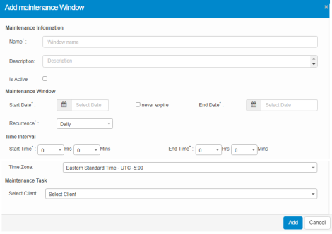

CI: Maintenance
Use this function to schedule a maintenance task for a CI such as reboot, shutdown or run a specific command.
| 1. | In the navigation pane, select ITSM > Configuration Management > CMDB. The Configuration Items window displays. |
| 2. | Select a record in the list. A new window opens and the Details tab displays. |
| 3. | Click the Maintenance tab. The Add Maintenance Window displays. |
| 4. | Click the New CI Maintenance button. The Add Maintenance Window displays. |

| 5. | Complete the fields referring to the table below. |
| 6. | Click Add to create or update the maintenance process. |
Maintenance Fields
| Field | Description |
|---|---|
| Name | The name of the window to be maintained. |
| Description | The description of the maintenance process. |
|
Is Active |
When selected, the maintenance is current active. |
|
Start Date |
The duration of the maintenance process. |
|
Never Expire |
Continues the configured maintenance process until there are configuration changes in the application. |
|
Recurrence |
Frequency at which the maintenance occurs. |
|
Start Time |
The time for the maintenance process in hours and minutes. |
|
Time Zone |
The time zone in which the existing set up is maintained. |
|
Select Client |
The client for whom this maintenance process applies. |